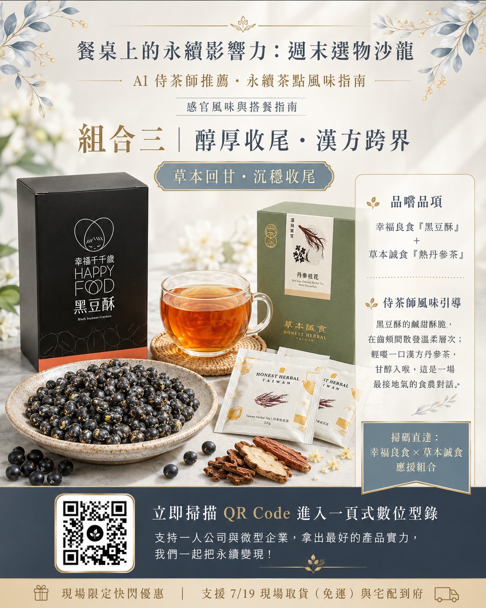
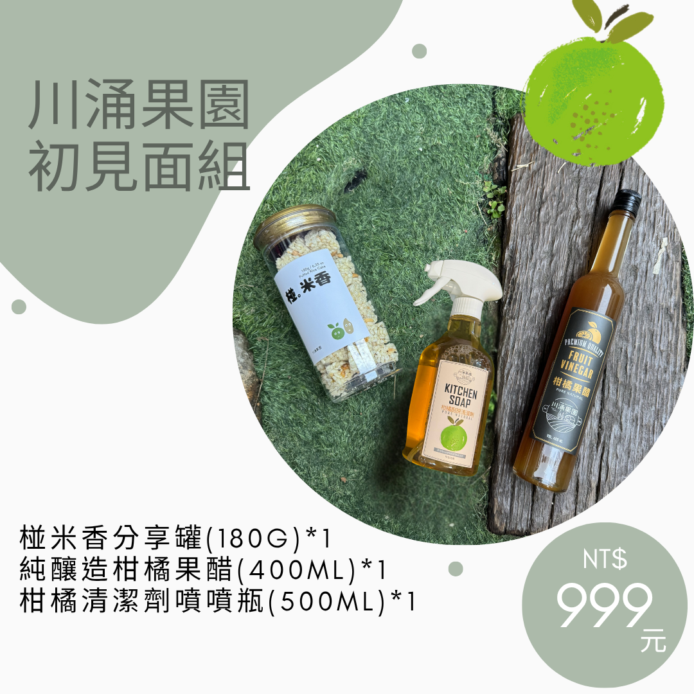

餐桌上的永續影響力：週末選物沙龍
—— AI 侍茶師推薦・永續茶點風味指南
透過茶點與本草搭餐的感官體驗，推動在地永續品牌的商業變現。點擊下方互動餐桌認識品牌，並在風味指南中勾選「支持試算」，即時累積您的支持為社會與環境創造的 ESG 永續價值成果。點擊「前往品牌活動頁」可直達業者頁面完成最終訂購與支付！
互動永續餐桌（點擊茶點認識品牌）
NextT × T Planner
永續沙龍
永續沙龍
一夫水產
緣長好事
川涌果園
幸福良食
草本誠食
生態養殖
#零用藥
一夫水產
以頂級水產為引，分享永續養殖觀點。採用循環水物理過濾與專利益生菌養殖，保證無抗生素與防腐劑，帶給餐桌最純粹的鮮甜體驗。
100%
循環水養殖
0%
化學藥劑殘留
團購優惠組合
AI 侍茶師搭餐風味圖卡（點擊放大檢視）

感官風味輪與搭餐指南
引導一邊聽故事、一邊品嚐，並直接掃碼下單

AI 侍茶師風味指南卡
川涌果園、緣長好事、幸福良食、草本誠食的風味密碼
B2B 企業團購與產地限定組合
適合企業 ESG 節慶採購、通路綠色聯名禮盒或高毛利機能保健差異化主打商品。
【產地限定】五大品牌團購組合與 B2B 選購清單
由 NextT 旅創加速器統一籌劃，為企業客戶提供一次到位的永續採購服務。包含川涌果園格外柑橘升級商品、緣長好事減糖文創禮盒、幸福良食青銀黑豆系列、草本誠食無毒丹參機能品及一夫水產溫室精品，支持產地直發，並享有大宗採購限定折扣與碳足跡抵減證書申報輔助。

活動策劃緣由：NextT 永續加速願景
不只是小農市集，更是一場在地綠色品牌與跨零售集團的跨界深度對話。
NextT 旅創加速器的陪伴承諾
我們致力於「長期陪伴品牌，將永續故事變現」。NextT 旅創加速器與 T Planner 攜手策劃本次【餐桌上的永續影響力】週末選物沙龍，旨在協助台灣在地永續食農品牌（川涌果園、緣長好事、幸福良食、草本誠食、一夫水產）對接三商集團等大型跨國零售通路的綠色採購體系，走進企業主流市場。
永續茶點與感官體驗的對話
本次活動精心推出「精緻永續茶點盤」，結合花生糖、柑橘米香、黑豆酥、草莓爆米花與茶飲，並引導與會的知識社群進行感官風味品嚐。社群夥伴透過深度的現場提問與線上預購支持，協助品牌看到消費者的真實需求，並以消費力量直接支持低碳農業與生態復育。
活動行程與線上報名 (Rundown & RSVP)
「NextT × T Planner 週末選物沙龍」為在地永續品牌打造專屬舞台，歡迎您線上預約出席 7/18 與 7/19 的活動場次。
沙龍行程時間表 (Rundown)
7/18 (六) 一夫水產專場 (12:40 - 14:00)
12:40 - 13:00
貴賓與社群夥伴報到
現場品牌快閃展示與自由交流。
13:00 - 13:10
活動暖場與理念說明
NextT 引言，介紹「餐桌上的永續影響力」核心價值與跨界整合目的。
13:10 - 13:40
一夫水產專場分享
以頂級水產為引，分享永續物理循環水養殖與無毒安全理念。
13:40 - 14:00
少量鮮味試吃體驗
提供少量精緻鮮味試吃（如川燙蝦仁），拉開週末選物沙龍序幕。
7/19 (日) 永續選物沙龍主場 (15:00 - 18:00)
15:00 - 15:05
開場與理念說明
介紹「永續茶點搭餐組合」與今日跨界通路對話目的。
15:05 - 16:45
小農品牌故事分享 (4 隊)
川涌果園、緣長好事、幸福良食、草本誠食創辦人親自分享（每隊 20-25 分鐘）。
16:45 - 17:15
三商集團專題分享
擔任「產業賦能者」，分享綠色採購通路趨勢與對永續品牌的期許。
17:15 - 17:45
【焦點對談】永續食農的未來
三商代表與五大品牌對談：探討包裝規格、通路門檻與 ESG 故事如何變現。
17:45 - 18:00
自由交流與團購取貨
現場展示區下單、預訂現場取貨、小農深度交流。
NextT 永續食農聯盟 ESG 數據看板
數據說話！此看板整合了所有合作業者（目前的五大品牌）在生產與營運端所創造的累計社會影響力與環境效益。透明的數據是打入大型跨國集團（如三商集團）綠色採購體系的最強綠色名片。
活化休耕農地面積
15.5
公頃
累計循環水使用量
1,240,000
公升
剩食/廢棄果皮再利用
480
公斤
契作農戶與青銀就業數
28
人
各業者 ESG 環境效益貢獻指標
沙龍預購訂單累積 ESG 價值（模擬沙龍現場銷售）
業者專區驗證
此專區僅限 NextT 合作業者進入。請輸入 NextT 提供的專屬解鎖密碼以登記與挑選 KOL：